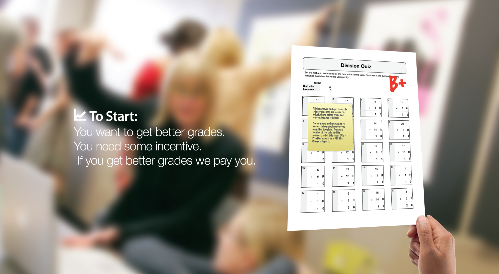
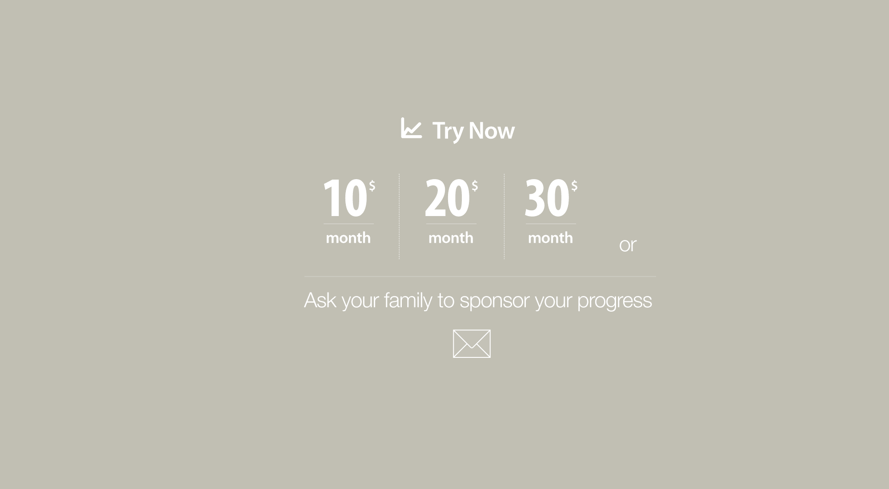
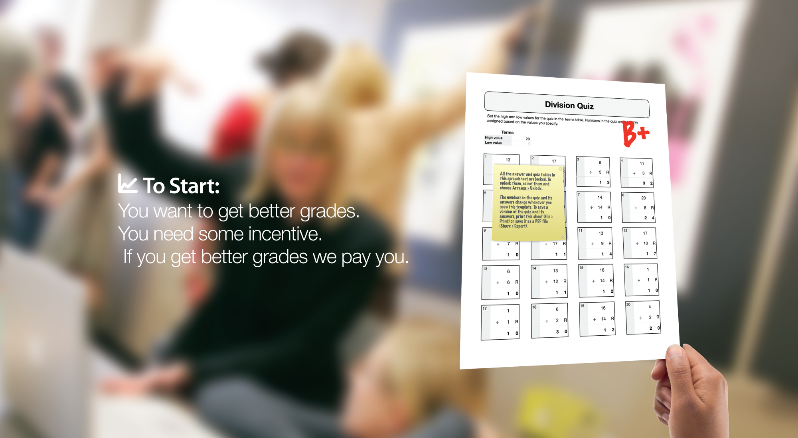
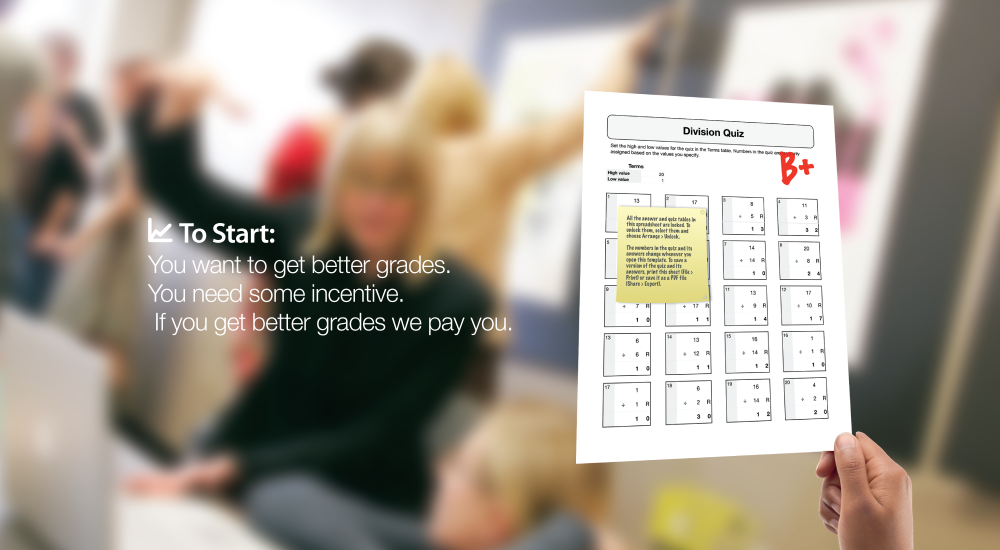
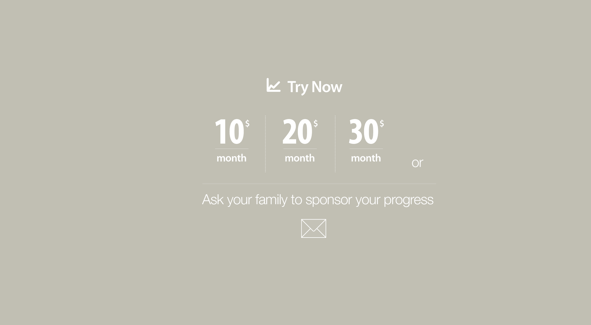
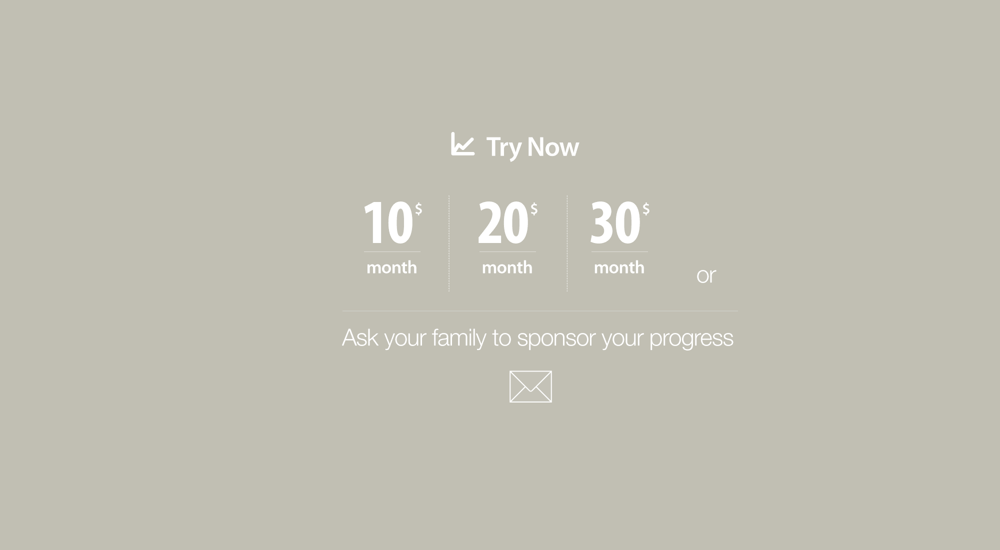

Our idea is currently in development. We appreciate your early interest. Please enter your email address so that we can stay in touch with you. Thank you for acting smart.ly
Join the vision
 

 
